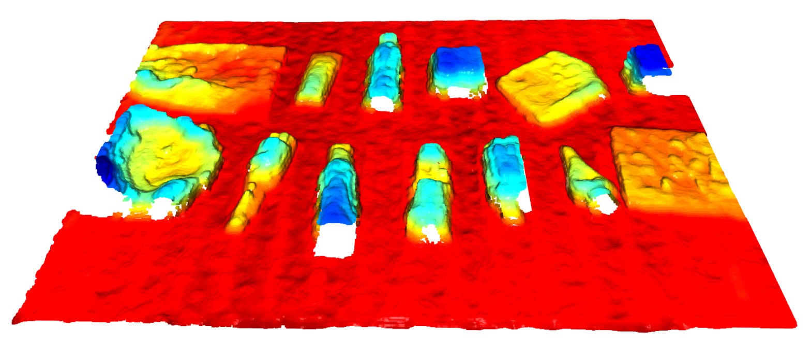

A framework for transferring manipulation skills to new robot embodiments and tasks without per-target fine-tuning. Policies trained in simulation generalize zero-shot to unseen hardware and object configurations.
Training a task-oriented search-and-interaction policy (TOSIP) end-to-end with reinforcement learning on a mobile manipulator. The agent explores cluttered indoor scenes, identifies a target specified by natural language, and performs a goal-directed interaction. Open-vocabulary target grounding lets the same policy generalize to objects never seen during training.
Year-long Bachelor capstone: designing and building a field robot that detects and mechanically removes weeds between crop rows, eliminating the need for chemical herbicides. Covers mechanical design, perception, navigation, and full system integration.

Semester thesis on predicting the mass of individual waste items directly from RGB-D images, as part of an autonomous waste-handling pipeline. Supervised by Fidel Esquivel Estay and Hendrik Kolvenbach.
